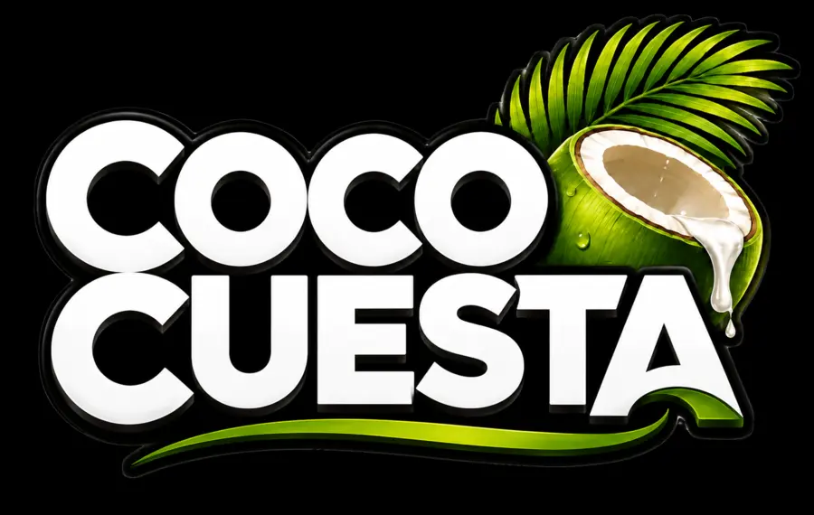
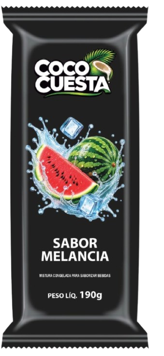
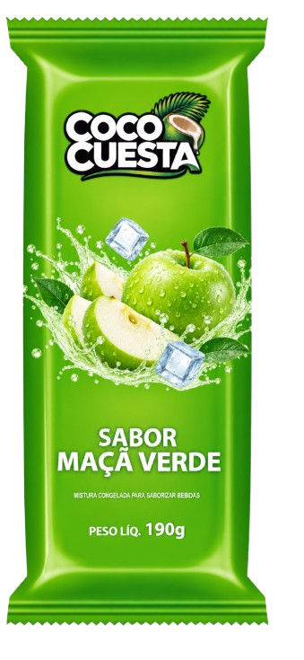
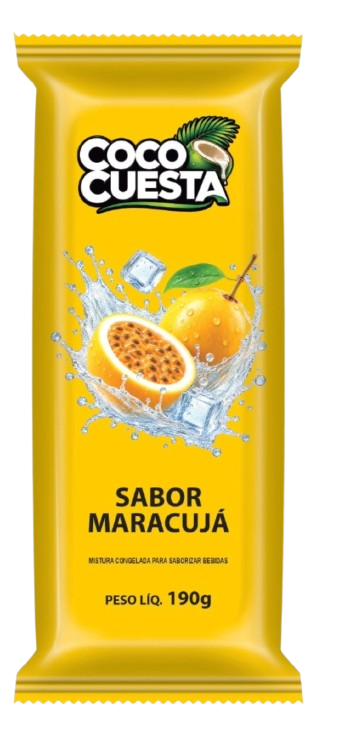

Site institucionalUma marca nova.
Muito mais sabor.
Muito mais sabor.

 Luiz PedrozoDesenvolvimento web & IA aplicada
Luiz PedrozoDesenvolvimento web & IA aplicada
Sou engenheiro de computação e desenvolvedor. Trabalho com React e TypeScript, exploro IA aplicada e uso minha vivência em negócio para entender o que existe além da tela.
Botucatu, São Paulo Construindo e aprendendo.
Seu próximo
brinde tem
mais sabor.


Treinamento, avaliação e análise em notebook.
Prévias ilustrativas de projetos reais.
Minha base de trabalho
Ideias que viraram código
Do primeiro contato com uma marca
à organização de uma operação.
5 projetos exibidos.

Site institucional
A operação por trás do produto: estoque, movimentações e acesso por perfil em um sistema pensado para o dia a dia.
Comissões, estoque e juros em aplicações de terminal com Node.js.
Um estudo de lógica e interação que faz parte do começo dessa trajetória.
Prazer, Luiz.
Minha base é a Engenharia de Computação. Meu interesse está no encontro entre a experiência de quem usa, a lógica do sistema e o contexto de quem precisa dele.
Trabalho com desenvolvimento web e exploro inteligência artificial aplicada. A vivência com negócio também orienta minhas escolhas: o software precisa ser claro para usar e fazer sentido na operação.
Aprendizado que vira repertório
Engenharia, desenvolvimento e a experiência de acompanhar um negócio de perto.
Universidade Tecnológica Federal do Paraná · UTFPR
Ampliação da base em aprendizado de máquina e aplicações de inteligência artificial.
Faculdade Galileu
Base em computação e sistemas, com TCC dedicado à análise de sentimento com BERT.
Ada Tech
Formação complementar em desenvolvimento de interfaces e aplicações web.
Vivência em rotinas administrativas, marketing e operação. Esse contexto ajuda a definir os problemas que busco resolver com o site da marca e o Gelo Gestão.
Planejamento e levantamento de requisitos para um software de gestão de resíduos radioativos.
Senai
Primeiro contato profissional com processos técnicos e manutenção.
Vamos conversar
Para falar sobre uma oportunidade, um projeto
ou trocar ideias sobre tecnologia.